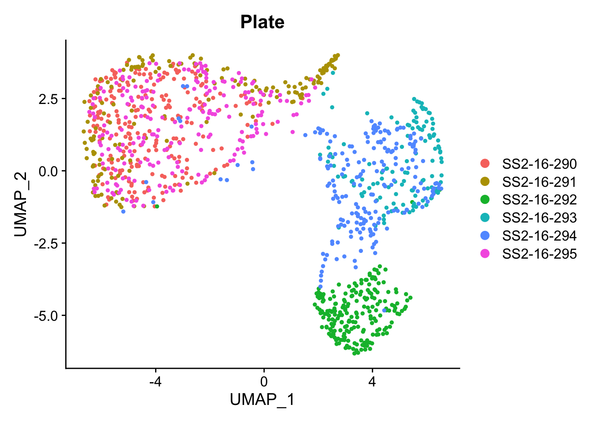

Code
knitr::opts_chunk$set(message = FALSE)
knitr::opts_chunk$set(warning = FALSE)
knitr::opts_chunk$set(error = FALSE)This script contains reanalysis of external OLG scRNA-seq data (EAE vs WT)
knitr::opts_chunk$set(message = FALSE)
knitr::opts_chunk$set(warning = FALSE)
knitr::opts_chunk$set(error = FALSE)#scRNA-seq analysis
library(Seurat)
library(Signac)
library(SeuratDisk)
library(SingleCellExperiment)
library(dittoSeq)
library(sctransform)
library(scran)
library(scater)
library(scuttle)
library(gprofiler2)
library('org.Mm.eg.db')
library('org.Hs.eg.db')
library(scCustomize)
#DEG analysis
library(DESeq2)
#data wrangling
library(tidyverse)
library(textshape)
library(curl)
library(GEOquery)
library(purrr)
library(PCAtools)
#visualization
library(ggrepel)
library(cowplot)
library(ggVennDiagram)
library(pheatmap)
library(ComplexHeatmap)
library(simplifyEnrichment)
library(viridis)
library(RColorBrewer)
library(circlize)
library(scales)
library(gridtext)
library(ggtext)
library(facefuns)wd = getwd()
indir = paste0(wd,'/scRNAdata/OL/')
dir.create(indir,recursive = TRUE)
outdir = paste0(wd,'/Output/OL/')
dir.create(outdir,recursive = TRUE)
figdir = paste0(wd,'/figures/OL/')
dir.create(figdir,recursive = TRUE)gse_meijer = 'GSE193238'
if(!file.exists(paste0(indir,gse_meijer,'/GSE193238_EAE_CtrlPeak_multiomics_GEO.rds'))){
supp_meijer <- getGEOSuppFiles(gse_meijer,
baseDir = indir,
makeDirectory = TRUE,
filter_regex = '.rds')
}
meijer = readRDS(paste0(indir,gse_meijer,'/GSE193238_EAE_CtrlPeak_multiomics_GEO.rds'))
meijer$condition = meijer$sample %>% as.factor %>% recode(Ctr = 'no EAE',EAE_peak = 'EAE')
#the file compression seems to be corruputed. it's possible you need to download the file by hand and exctract it manually. The correct file size should be 3.2 GBgse_falcao = 'GSE113973'
#the geo record contains individual count matrices for each plate
supp_falcao = paste0(indir,gse_falcao,'/',dir(paste0(indir,gse_falcao)))
if(length(supp_falcao) == 1) {
supp_falcao <- getGEOSuppFiles(gse_falcao,
baseDir = indir,
makeDirectory = TRUE,
filter_regex = 'counts.tab.gz',
fetch_files = TRUE) %>%
rownames}
falcao_exp = lapply(supp_falcao,function(x) {
exp = read_tsv(x)
genes = make.unique(exp$gene)
mat = as.matrix(exp[-1])
rownames(mat) = genes
return = mat })
#the annotation data is not contained in the GEO record but can only be retrieved from the UCSC cell browser entry of the dataset
# Download annotation
falcao_meta = paste0(outdir,'falcao_annotation.rds')
if(!file.exists(paste0(outdir,'falcao_annotation.rds'))) {
falcao_meta = curl_download(url = 'https://cells.ucsc.edu/oligo-lineage-ms/Annotation.rds',
destfile = paste0(outdir,'falcao_annotation.rds'))}
falcao_meta = readRDS(paste0(outdir,'falcao_annotation.rds'))
# split annotation
falcao_meta = split(falcao_meta, falcao_meta$Plate)
#clean up rownames
falcao_meta = lapply(falcao_meta,function(x) {
tmp = x
rownames(tmp) = gsub('counts_...\\.tab\\.','',rownames(tmp))
return = tmp})
#name expression matrices
names(falcao_exp) = names(falcao_meta)
#subset expression matrices to only include annotated cells
falcao_exp_filt = purrr::imap(falcao_exp,function(x,y){
x[,rownames(falcao_meta[[y]])]
})
#create seurat objects from annotation and expression matrices
falcao_seurat = purrr::imap(falcao_exp_filt,function(x,y){
CreateSeuratObject(counts = x,
meta.data = falcao_meta[[y]])
})
#merge all plates into one
falcao = Merge_Seurat_List(falcao_seurat)
falcao$condition = falcao$Group %>% as.factor %>% recode(Ctrl = 'no EAE',EAE = 'EAE', )falcao$MOL <- grepl('^MOL',falcao@meta.data$Renamed_clusternames)
falcao.mol <- falcao %>% subset(MOL)
DefaultAssay(falcao.mol)<-'RNA'#aggregate counts
falcao.summed<-AggregateExpression(falcao.mol,
group.by = c('Plate'),
assays = 'RNA',
slot = 'counts',
return.seurat = FALSE)
#extract matrix and transpose row and columns
falcao.cts<-falcao.summed$RNA
#generate sample metadata
falcao.coldata<-data_frame(samples = colnames(falcao.cts))
#from plate 290 to 295, groups info: Ctrl, Ctrl, EAE, EAE,EAE, Ctrl
falcao.coldata$condition<-c('Ctrl', 'Ctrl', rep('EAE', 3), 'Ctrl')
#make samples to rownames
rownames(falcao.coldata) = falcao.coldata$samples
#observe assembled count matrix and metadata
head(falcao.cts) SS2-16-290 SS2-16-291 SS2-16-292 SS2-16-293 SS2-16-294 SS2-16-295
Adora1 19856 14258 29987 10457 19095 21180
Sntg1 114 1 0 0 2 0
Prim2 638 1667 442 557 1019 1609
Bai3 14 1166 155 510 426 559
Cflar 536 686 1214 722 1033 753
Gpr39 0 0 0 0 0 0 head(falcao.coldata)# A tibble: 6 × 2
samples condition
<chr> <chr>
1 SS2-16-290 Ctrl
2 SS2-16-291 Ctrl
3 SS2-16-292 EAE
4 SS2-16-293 EAE
5 SS2-16-294 EAE
6 SS2-16-295 Ctrl falcao.pca.raw<-prcomp(t(falcao.cts)) #run PCA, scale=T
#extract calculated variances to assist visualization
#get percentage of variant explained by each pc
falcao.percentVAR<- round(100*falcao.pca.raw$sdev^2/sum(falcao.pca.raw$sdev^2), 1)
#get sd ratios of PC2/PC1 to adjust plot center
falcao.sd.ratio<-sqrt(falcao.percentVAR[2]/falcao.percentVAR[2])
#organize PC1, PC2 coordinate, and group information into one data frame
falcao.dataGG<-data.frame(PC1 = falcao.pca.raw$x[,1], PC2 = falcao.pca.raw$x[,2],
condition=falcao.coldata$condition)
#plot sample distances
(falcao.pca.plt<-ggplot(falcao.dataGG, aes(PC1, PC2, label= rownames(falcao.dataGG)))+
geom_point(aes(colour=condition))+
ggtitle('Falcao et al 2018, MOL pseudobulk profiles PCA')+
xlab(paste0('PC1, VarExp: ', falcao.percentVAR[1], '%'))+ #xaxis title
ylab(paste0('PC2, VarExp: ', falcao.percentVAR[2], '%'))+ #yaxis title
theme(plot.title = element_text(hjust = 0.5))+ #put title in the middle
coord_fixed(ratio = falcao.sd.ratio)+ #coordinate ratio based on sd ratio
scale_color_manual(values = c('darkorange','dodgerblue3'))+
geom_text_repel(aes(color=factor(condition)), fontface=2)
)#process & embed falcao data
falcao.mol =
falcao.mol %>%
NormalizeData(object = .,normalization.method = "LogNormalize",scale.factor = 1e4) %>%
FindVariableFeatures() %>%
ScaleData(features = rownames(.)) %>%
RunPCA() %>%
RunUMAP(dims = 1:10)DimPlot(falcao.mol,group.by = 'Plate')
#remove sample SS2-16-292 for Seurat data
falcao.mol =
subset(falcao.mol, Plate != 'SS2-16-292')
falcao.mol %>%
NormalizeData(object = .,normalization.method = "LogNormalize",scale.factor = 1e4) %>%
FindVariableFeatures() %>%
ScaleData(features = rownames(.)) %>%
RunPCA() %>%
RunUMAP(dims = 1:10)An object of class Seurat
24490 features across 940 samples within 1 assay
Active assay: RNA (24490 features, 2000 variable features)
2 dimensional reductions calculated: pca, umap#remove sample SS2-16-292 for pseudobulk
falcao.mol <- falcao.mol %>% subset(Plate != 'SS2-16-292')
#clean outlier from pseudobulk
falcao.cts<-falcao.cts[,colnames(falcao.cts) != 'SS2-16-292']
falcao.coldata<-falcao.coldata[row.names(falcao.coldata) != 'SS2-16-292', ,drop=FALSE]
#Create DESeq2 object
falcao.dds<-DESeqDataSetFromMatrix(countData = falcao.cts, colData = falcao.coldata,
design = ~ condition)
#filter genes that has lower than 10 reads
falcao.dds<-falcao.dds[rowSums(counts(falcao.dds)) >=10, ]
############to do, PCA or MDS control
#run DESeq
falcao.dds<-DESeq(falcao.dds)
resultsNames(falcao.dds)[1] "Intercept" "condition_EAE_vs_Ctrl"#extract results
falcao.res<-results(falcao.dds, name = "condition_EAE_vs_Ctrl")
falcao.reslog2 fold change (MLE): condition EAE vs Ctrl
Wald test p-value: condition EAE vs Ctrl
DataFrame with 16536 rows and 6 columns
baseMean log2FoldChange lfcSE stat pvalue padj
<numeric> <numeric> <numeric> <numeric> <numeric> <numeric>
Adora1 16326.5212 -0.0326299 0.176061 -0.1853336 0.8529674 0.967251
Sntg1 20.9765 -5.2517296 3.365019 -1.5606834 0.1185985 0.449492
Prim2 1050.0012 -0.4554811 0.493946 -0.9221275 0.3564621 0.737714
Bai3 547.9571 0.0897899 1.210080 0.0742016 0.9408500 0.989433
Cflar 751.0066 0.7403866 0.351701 2.1051611 0.0352773 0.224831
... ... ... ... ... ... ...
Prdx3 10342.0878 -0.3378690 0.240540 -1.404628 0.160132 0.519552
Sfxn4 1257.1419 -0.2014504 0.341870 -0.589261 0.555686 0.869381
Gm7102 52.8292 0.4894105 0.986932 0.495891 0.619971 0.895623
Csf2ra 681.4682 -0.0613268 0.339739 -0.180511 0.856751 0.968161
eGFP 13900.1342 2.6063330 3.315592 0.786084 NA NAcolnames(falcao.res)<-paste0('Falcao_EAEvsCtrl_',colnames(falcao.res))
falcao.res<-as.data.frame(na.omit(falcao.res))
volcano<-function(x, plt_title){
fc_position<-grep('log2FoldChange', colnames(x))
adjp_position<-grep('padj', colnames(x))
x$diffexpressed<-'NO'
x$diffexpressed[x[,fc_position] > 0 & x[,adjp_position] < 0.05] <- 'UP'
x$diffexpressed[x[,fc_position] < 0 & x[,adjp_position] < 0.05] <- 'DOWN'
x$deg_label<-NA
x$deg_label[x$diffexpressed != 'NO'] <- rownames(x)[x$diffexpressed != 'NO']
ggplot(data = x, aes(x = x[,fc_position], y = -log10(x[,adjp_position]), col = diffexpressed,
#label = deg_label
))+
geom_point()+
theme_minimal()+
#geom_text_repel(max.overlaps = 20)+
scale_color_manual(values = c('lightblue3','grey','lightcoral'))+
geom_vline(xintercept = 0, col = 'grey48', linetype = 'longdash')+
geom_hline(yintercept = -log10(0.05), col='grey48', linetype = 'longdash')+
ggtitle(plt_title)
}
#plot a volcano for falcao pseudobulk result
volcano(x = falcao.res, plt_title = 'Falcao EAEvsCtrl pseudobulk volcano plot')#only keep MOLs
unique(meijer@meta.data$Final_celltypes) [1] "MOL56_EAE" "MOL56_Ctr" "MOL12_EAE" "Astro" "MiGl" "MOL3_EAE"
[7] "MOL_Ctr" "MOL2_Ctr" "OPC_Ctr" "OPC_EAE" "NFOL" "COP" meijer <- subset(meijer,
subset = Final_celltypes %in% unique(grep('MOL',
meijer$Final_celltypes,
value = TRUE)))
#visualize subset data
DimPlot(meijer, group.by = 'Final_celltypes', label = TRUE)#generate pure RNA profile obj
meijer.re<-CreateSeuratObject(counts = meijer@assays$RNA@counts, meta.data = meijer@meta.data, project = 'meijer.re')
#renormalize, rescale, pca, umap
meijer.re =
meijer.re %>%
NormalizeData(object = .,normalization.method = "LogNormalize",scale.factor = 1e4) %>%
FindVariableFeatures() %>%
ScaleData(features = rownames(.)) %>%
RunPCA() %>%
RunUMAP(dims = 1:15)
DimPlot(meijer.re, group.by = 'Final_celltypes')Meijer data DGE analysis and result visualization because of the lack of replicates, DGE analysis is run using wilcox test
Idents(meijer.re)<- 'sample'
meijer.res<-FindMarkers(meijer.re, ident.1 = 'EAE_peak', ident.2 = 'Ctr', min.pct = 0.1, logfc.threshold = 0.1)
head(meijer.res) p_val avg_log2FC pct.1 pct.2 p_val_adj
Stat1 0 2.821664 0.900 0.076 0
B2m 0 5.221057 0.990 0.140 0
Zbp1 0 1.306073 0.468 0.000 0
Gbp7 0 2.180216 0.710 0.001 0
Gbp3 0 1.999629 0.619 0.000 0
Oasl2 0 1.427295 0.493 0.000 0colnames(meijer.res)[c(2,5)]<-c('log2FoldChange','padj')
colnames(meijer.res)<-paste0('meijer_EAEvsCtrl_', colnames(meijer.res))
#plot a volcano for wheeler pseudobulk result
volcano(x = meijer.res, plt_title = 'Meijer EAEvsCtrl DGE volcano plot')###still some batch effects after bulk normlization, but looks ok##Enrichment analysis - run ORA analysis for GO:BP - for up and down regulated genes, respectively
#ORA GOBP enrichment for mouse data
mouse.marker<-list(falcao.res, meijer.res)
#merge significant result into one matrix, use adjP 0.05 as cutoff
mouse.sig.up<-lapply(mouse.marker, function(x){
pvalue<-grep('padj',colnames(x))
fc<-grep('log2FoldChange', colnames(x))
return(subset(x, subset = x[,pvalue] < 0.05 & x[, fc] > 0))
})
mouse.sig.down<-lapply(mouse.marker, function(x){
pvalue<-grep('padj',colnames(x))
fc<-grep('log2FoldChange', colnames(x))
return(subset(x, subset = x[,pvalue] < 0.05 & x[, fc] < 0))
})
mouse.sig<-c(mouse.sig.up, mouse.sig.down)
names(mouse.sig)<-c('falcao_up','meijer_up','falcao_down','meijer_down')
#loop analysis for all four comparisons and store gprofiler2 result
mouse.ora<-vector(mode = 'list', length = 4)
for (i in 1:4){
#gprofiler2 enrichment
gostres_loop<-gost(query = rownames(mouse.sig[[i]]),
organism = 'mmusculus', ordered_query = FALSE, multi_query = FALSE,
significant = TRUE, exclude_iea = TRUE, evcodes = TRUE,
measure_underrepresentation = FALSE,
user_threshold = 0.05, correction_method = 'g_SCS',
domain_scope = 'annotated', custom_bg = NULL,
numeric_ns = '', sources = c('GO:BP'), as_short_link = FALSE)
#export original result table
mouse.ora[[i]]<-gostres_loop$result
write.csv(gostres_loop$result[, c(1:13, 16)],
file = paste0(outdir, 'gprofiler_GOBP_', names(mouse.sig)[i],'.csv'))
#prepare GEM table for cytoscape visualization
gem<-gostres_loop$result[,c('term_id','term_name','p_value','intersection')]
colnames(gem)<-c('GO.ID','Description','p.val','Genes')
gem$FDR<-gem$p.val
gem$Phenotype = paste0('+', i)
gem<-gem[,c('GO.ID','Description','p.val','FDR','Phenotype','Genes')]
write.table(gem,
file = paste0(outdir, 'gprofiler_GOBP_GEM_', names(mouse.sig)[i],'.txt'),
sep = '\t', quote = FALSE, row.names = FALSE)
}volcano_falcao = volcano(x = falcao.res, plt_title = 'Falcao et al.')
ggsave(paste0(figdir,'volcano_falcao.svg'),volcano_falcao,dpi = 600,width = 5,height = 5,units = 'cm')
volcano_falcaovolcano_meijer = volcano(x = meijer.res, plt_title = 'Meijer et al.')
ggsave(paste0(figdir,'volcano_meijer.svg'),volcano_meijer,dpi = 600,width = 5,height = 5,units = 'cm')
volcano_meijer#note: the package only serves for visualizing GO database enriched results
#re-read in all go results
dir<-list.files(path = outdir, pattern = '.csv')
en.results = lapply(paste0(outdir,dir), function(x){
tmp = read.csv(x, stringsAsFactors = FALSE)
tmp2 = tmp[, c('p_value','term_id','term_name')] %>%
dplyr::mutate(.,sig_level = -log10(p_value)) %>%
dplyr::rename(., p.adjust = p_value)
return(tmp2)
})#upregulated gene enriched GO BP terms
#organize in a list with required column names
mouse.up.go<-list(en.results[[2]], en.results[[4]])
names(mouse.up.go)<-c('Falcao','Meijer')
mouse.down.go<-list(en.results[[1]], en.results[[3]])
names(mouse.down.go)<-c('Falcao','Meijer')
#visualization script met error, potentially due to bug
#tried install Macports and ghostscript to handle pdf file exportation
#transfer this part to ubuntu to operate the following code
plot_go_up = simplifyGOFromMultipleLists(mouse.up.go,
padj_cutoff = 0.05,
ont = 'BP',
exclude_words = c('process','biological','responses','regulation'),
db = 'org.Mm.eg.db',
#change gradient color
heatmap_param = list(col = c('steelblue4', 'white', 'orange3'),
breaks = c(1, 0.05, 0.0005)))Use column 'term_id' as `go_id_column`.
Use column 'p.adjust' as `padj_column`.
1015/1015 GO IDs left for clustering.
Cluster 1015 terms by 'binary_cut'... 41 clusters, used 1.169114 secs.plot_go_down = simplifyGOFromMultipleLists(mouse.down.go,
padj_cutoff = 0.05,
ont = 'BP',
exclude_words = c('process','biological','responses','regulation'),
db = 'org.Mm.eg.db',
#change gradient color
heatmap_param = list(col = c('steelblue4', 'white', 'orange3'),
breaks = c(1, 0.05, 0.0005)))Use column 'term_id' as `go_id_column`.
Use column 'p.adjust' as `padj_column`.
263/263 GO IDs left for clustering.
Cluster 263 terms by 'binary_cut'... 16 clusters, used 0.03478599 secs.schirmer_genes = list(
mhc_i = c('B2m','H2-K1','H2-D1'),
oligodendrocyte_differentiation = c('Bcas1','Opalin','Sgms1','Sema6a'),
cell_stress = c('Atf4','Faim2','Junb'),
iron_accumulation = c('Ftl1','Fth1')
)
names(schirmer_genes) = c('MHC I','Oligodendrocyte differentiation and Cell-cell interaction','Cell stress','Iron accumulation')
names(schirmer_genes) = purrr::imap(schirmer_genes, function(x,y){paste0(length(x),'_',y)})VlnPlotTheme = theme(panel.background = element_blank(),
axis.line.x = element_line(),
text=element_text(size=8),
axis.text = element_text(size=8,color = 'black'))
#set graphical plot paramters
cols = c('#D4D4D4','plum2')
#colsCas = c('noEAE' = "#D4D4D4", 'EAE' = 'plum2')
colsDots = c('black','#008000')
jWidth = 0.3
dWidth = 0.6
pSize = 0.2
pAlpha = 0.3
colsCas = c('noEAE' = "#D4D4D4", 'EAE' = 'plum2')falcao = falcao.mol
meijer = meijer.regenes_exp = lapply(schirmer_genes,function(x) get_exp(genes = x))
plots = purrr::imap(genes_exp, function(x,y) {
name = strsplit(y,'_')[[1]][2]
plot_exp(x,name)})
#add legend to last plot
plots[[4]] = plots[[4]] + theme(legend.position = 'right',
legend.title = element_blank())
#increase widths parameter to accomodate legend
names(plots)[4] = paste0('3',gsub('\\d','',names(plots)[4]))
plots$`3_MHC I`
$`4_Oligodendrocyte differentiation and Cell-cell interaction`
$`3_Cell stress`
$`3_Iron accumulation`genes_exp = get_exp(genes = 'Slc16a1')
plots = plot_exp(genes_exp, 'Slc16a1') + theme(axis.text.x = element_blank(),
axis.ticks.x = element_blank(),
legend.position = 'right',
legend.title = element_blank())
plotssessionInfo()R version 4.1.2 (2021-11-01)
Platform: aarch64-apple-darwin20 (64-bit)
Running under: macOS Monterey 12.2.1
Matrix products: default
BLAS: /Library/Frameworks/R.framework/Versions/4.1-arm64/Resources/lib/libRblas.0.dylib
LAPACK: /Library/Frameworks/R.framework/Versions/4.1-arm64/Resources/lib/libRlapack.dylib
locale:
[1] en_US.UTF-8/en_US.UTF-8/en_US.UTF-8/C/en_US.UTF-8/en_US.UTF-8
attached base packages:
[1] grid stats4 stats graphics grDevices datasets utils
[8] methods base
other attached packages:
[1] facefuns_0.0.0.9000 ggtext_0.1.1
[3] gridtext_0.1.4 scales_1.2.0
[5] circlize_0.4.15 RColorBrewer_1.1-3
[7] viridis_0.6.2 viridisLite_0.4.0
[9] simplifyEnrichment_1.4.0 ComplexHeatmap_2.10.0
[11] pheatmap_1.0.12 ggVennDiagram_1.2.1
[13] cowplot_1.1.1 PCAtools_2.6.0
[15] ggrepel_0.9.1 GEOquery_2.62.2
[17] curl_5.0.0 textshape_1.7.3
[19] forcats_0.5.1 stringr_1.4.0
[21] dplyr_1.0.9 purrr_0.3.4
[23] readr_2.1.2 tidyr_1.2.0
[25] tibble_3.1.7 tidyverse_1.3.1
[27] DESeq2_1.34.0 scCustomize_0.7.0
[29] org.Hs.eg.db_3.14.0 org.Mm.eg.db_3.14.0
[31] AnnotationDbi_1.56.2 gprofiler2_0.2.1
[33] scater_1.22.0 scran_1.22.1
[35] scuttle_1.4.0 sctransform_0.3.3
[37] dittoSeq_1.6.0 ggplot2_3.3.6
[39] SingleCellExperiment_1.16.0 SummarizedExperiment_1.24.0
[41] Biobase_2.54.0 GenomicRanges_1.46.1
[43] GenomeInfoDb_1.30.1 IRanges_2.28.0
[45] S4Vectors_0.32.4 BiocGenerics_0.40.0
[47] MatrixGenerics_1.6.0 matrixStats_0.62.0
[49] SeuratDisk_0.0.0.9020 Signac_1.7.0
[51] sp_1.5-0 SeuratObject_4.1.0
[53] Seurat_4.1.1
loaded via a namespace (and not attached):
[1] rsvd_1.0.5 ica_1.0-3
[3] svglite_2.1.0 RcppRoll_0.3.0
[5] Rsamtools_2.10.0 foreach_1.5.2
[7] lmtest_0.9-40 crayon_1.5.1
[9] spatstat.core_2.4-4 MASS_7.3-57
[11] nlme_3.1-158 backports_1.4.1
[13] reprex_2.0.1 GOSemSim_2.22.0
[15] rlang_1.0.4 XVector_0.34.0
[17] ROCR_1.0-11 readxl_1.4.0
[19] irlba_2.3.5 limma_3.50.3
[21] BiocParallel_1.28.3 rjson_0.2.21
[23] bit64_4.0.5 glue_1.6.2
[25] parallel_4.1.2 vipor_0.4.5
[27] spatstat.sparse_2.1-1 spatstat.geom_2.4-0
[29] haven_2.5.0 tidyselect_1.1.2
[31] fitdistrplus_1.1-8 XML_3.99-0.10
[33] zoo_1.8-10 ggpubr_0.4.0
[35] xtable_1.8-4 magrittr_2.0.3
[37] evaluate_0.15 cli_3.3.0
[39] zlibbioc_1.40.0 RVenn_1.1.0
[41] rstudioapi_0.13 miniUI_0.1.1.1
[43] rpart_4.1.16 fastmatch_1.1-3
[45] shiny_1.7.1 BiocSingular_1.10.0
[47] xfun_0.31 tm_0.7-10
[49] clue_0.3-61 cluster_2.1.3
[51] KEGGREST_1.34.0 listenv_0.8.0
[53] Biostrings_2.62.0 png_0.1-7
[55] future_1.26.1 withr_2.5.0
[57] bitops_1.0-7 slam_0.1-50
[59] plyr_1.8.7 cellranger_1.1.0
[61] dqrng_0.3.0 pillar_1.7.0
[63] RcppParallel_5.1.5 GlobalOptions_0.1.2
[65] cachem_1.0.6 fs_1.5.2
[67] NLP_0.2-1 hdf5r_1.3.5
[69] GetoptLong_1.0.5 paletteer_1.4.0
[71] DelayedMatrixStats_1.16.0 vctrs_0.4.1
[73] ellipsis_0.3.2 generics_0.1.3
[75] tools_4.1.2 beeswarm_0.4.0
[77] archive_1.1.5 munsell_0.5.0
[79] DelayedArray_0.20.0 fastmap_1.1.0
[81] compiler_4.1.2 abind_1.4-5
[83] httpuv_1.6.5 plotly_4.10.0
[85] rgeos_0.5-9 GenomeInfoDbData_1.2.7
[87] gridExtra_2.3 edgeR_3.36.0
[89] colorway_0.2.0 lattice_0.20-45
[91] deldir_1.0-6 utf8_1.2.2
[93] later_1.3.0 jsonlite_1.8.0
[95] ScaledMatrix_1.2.0 pbapply_1.5-0
[97] carData_3.0-5 sparseMatrixStats_1.6.0
[99] renv_0.15.5 genefilter_1.76.0
[101] lazyeval_0.2.2 promises_1.2.0.1
[103] car_3.1-0 doParallel_1.0.17
[105] goftest_1.2-3 spatstat.utils_2.3-1
[107] reticulate_1.25 rmarkdown_2.14
[109] textshaping_0.3.6 statmod_1.4.36
[111] Rtsne_0.16 uwot_0.1.11
[113] igraph_1.3.2 proxyC_0.3.3
[115] survival_3.3-1 yaml_2.3.5
[117] systemfonts_1.0.4 htmltools_0.5.2
[119] memoise_2.0.1 locfit_1.5-9.6
[121] digest_0.6.29 assertthat_0.2.1
[123] mime_0.12 RSQLite_2.2.14
[125] future.apply_1.9.0 data.table_1.14.2
[127] blob_1.2.3 ragg_1.2.2
[129] splines_4.1.2 labeling_0.4.2
[131] rematch2_2.1.2 RCurl_1.98-1.8
[133] broom_1.0.0 hms_1.1.1
[135] modelr_0.1.8 colorspace_2.0-3
[137] BiocManager_1.30.18 ggbeeswarm_0.6.0
[139] shape_1.4.6 Rcpp_1.0.9
[141] RANN_2.6.1 fansi_1.0.3
[143] tzdb_0.3.0 parallelly_1.32.0
[145] R6_2.5.1 ggridges_0.5.3
[147] lifecycle_1.0.1 bluster_1.4.0
[149] ggsignif_0.6.3 leiden_0.4.2
[151] snakecase_0.11.0 Matrix_1.4-1
[153] RcppAnnoy_0.0.19 iterators_1.0.14
[155] htmlwidgets_1.5.4 beachmat_2.10.0
[157] polyclip_1.10-0 rvest_1.0.2
[159] mgcv_1.8-40 globals_0.15.1
[161] patchwork_1.1.1 spatstat.random_2.2-0
[163] progressr_0.10.1 codetools_0.2-18
[165] lubridate_1.8.0 GO.db_3.14.0
[167] metapod_1.2.0 dbplyr_2.2.1
[169] RSpectra_0.16-1 gtable_0.3.0
[171] DBI_1.1.3 tensor_1.5
[173] httr_1.4.3 KernSmooth_2.23-20
[175] stringi_1.7.8 vroom_1.5.7
[177] reshape2_1.4.4 farver_2.1.1
[179] annotate_1.72.0 magick_2.7.3
[181] xml2_1.3.3 BiocNeighbors_1.12.0
[183] geneplotter_1.72.0 scattermore_0.8
[185] bit_4.0.4 spatstat.data_2.2-0
[187] janitor_2.1.0 pkgconfig_2.0.3
[189] ggprism_1.0.3.9000 rstatix_0.7.0
[191] knitr_1.39